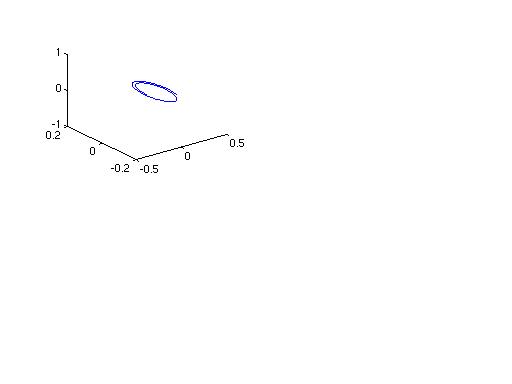

%Script to model influence of uniform e and b field %on charged particle motion clear(); %clf(); m=1.6*(10^(-27)); q=1.6*(10^(-19)); dt=5.0*(10^(-9)); it=1:1:1000; r=zeros(3,1); v=zeros(3,1); v(2,1)=0.1*10^6; v(2,1)=1.0*(10^6); b=zeros(3,1); e=zeros(3,1); %bfield in z direction b(3,1)=0.1; %efield in y direction %e(2,1)=0.2; %e(3,1)=10*(10^4); ns=200; ic=1; ar=zeros(ns,3); for it=2:1:ns dv=lorentzf(q,m,v,e,b); newv=v+dv*dt; newr=r+v*dt; v=newv; r=newr; ar(it,:)=r(1:3,1)'; end; subplot(2,2,ic); plot3(ar(:,1),ar(:,2),ar(:,3));